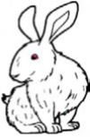

1.1 Ayo membaca
Ayam
Ayam adalah hewan berkaki dua. Cakar kakinya digunakan untuk menggaruk-garuk tanah. Cakar kaki digunakan untuk mencari makanan. Makanan berupa hewan-hewan kecil di dalam tanah. Ayam juga memakan biji-bijian. Ayam berkembang biak dengan cara bertelur. Telur-telur dierami induk ayam selama 21 hari. Setelah 21 hari, telur-telur pun menetas. Telur dan daging ayam mengandung protein tinggi yang berguna bagi tubuh manusia.Â
Kelinci

Kelinci adalah hewan yang berkembang biak dengan cara melahirkan. Kelinci merupakan hewan pemakan tumbuhan. Tumbuhan yang paling disukai kelinci diantaranya wortel, kangkung, dan mentimun. Seluruh bagian tubuh kelinci ditutupi bulu. Bulu kelinci ada yang berwarna putih, coklat, dan hitam. Kelinci hewan yang sangat lucu sehingga sering dijadikan hewan peliharaan. Kelinci memiliki punggung melengkung dan ekor pendek. Kelinci memiliki kepala kecil dan daun telinga besar serta panjang. Bibir kelinci pada bagian atas terbelah dan tersambung hingga hidung. Ada beberapa helai kumis yang keras di bagian hidung. Kelinci merupakan hewan peloncat, akan tetapi loncatannya lemah dan kurang lincah.